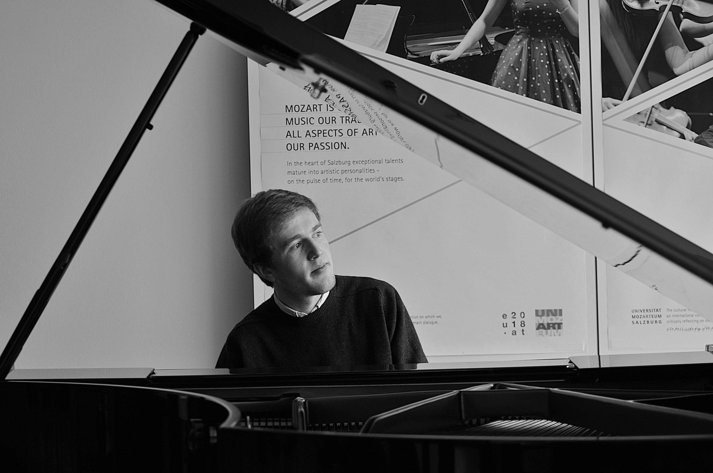
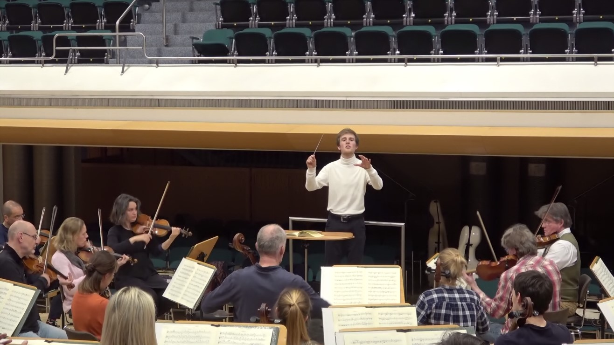
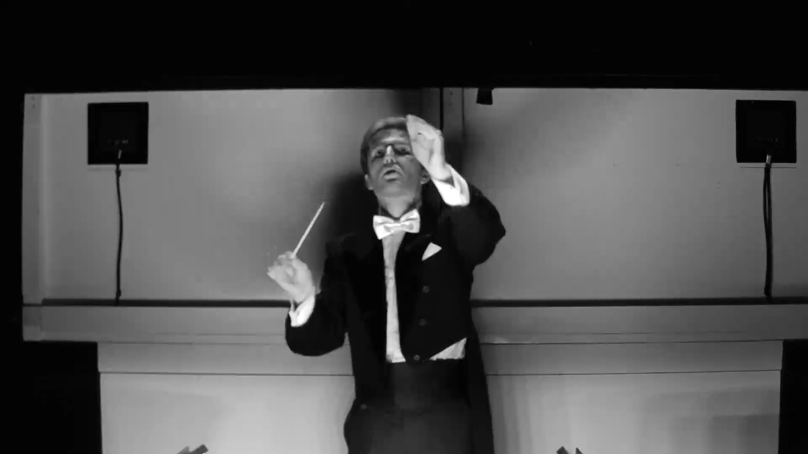

Ruben Hawer Dirigent/Conductor
Belgian conductor Ruben Hawer, born in Antwerp in 1998, is currently Kapellmeister and Choral Director at Theater Hof, Germany. Having joined the theatre in 2024 as Choral Director with conducting responsibilities, he was appointed Kapellmeister in October 2025 following his increasing involvement in the musical direction of opera and music theatre productions.
At Theater Hof, Hawer has conducted a wide range of repertoire, including opera, operetta and musical theatre. A particularly significant milestone was his last-minute takeover of the musical direction of Bizet's Les pêcheurs de perles in 2025, conducting all performances following the premiere. His engagements also include performances of Humperdinck's Dornröschen, Tchaikovsky's Eugene Onegin, the musical Titanic and Kálmán's Die Bajadere, as well as the musical direction of the theatre productions Peterchens Mondfahrt and Tannöd.
Beyond his work in Hof, Hawer has conducted orchestras and ensembles including the Mozarteumorchester Salzburg, the Bad Reichenhall Philharmonic Orchestra, the Austrian Ensemble for New Music (ŒNM), Ensemble Multilatérale and the New Art and Music Ensemble Salzburg (NAMES), with which he has performed numerous contemporary works and world premieres.
His experience as an assistant conductor has brought him into contact with internationally acclaimed musicians. At the Belgian National Orchestra, he assisted Chief Conductor Antony Hermus in a programme featuring violinist Hilary Hahn. He also assisted Marie Jacquot at the Vienna Symphony Orchestra in projects involving soloists Leonidas Kavakos and Dalibor Karvay. During the 2022 Mozartwoche in Salzburg, he prepared the Mozarteum University Symphony Orchestra for Maxim Vengerov and assisted him. Further operatic experience includes assisting conductor Gernot Sahler on several productions and working with the choruses of the Semperoper Dresden and the Gärtnerplatztheater Munich.
From 2023 to 2025, Hawer was associated with the Salzburg Orchestra Academy, initially as Assistant Conductor and later taking on the musical direction of concerts with its youth orchestras. Among these engagements was a performance as part of the opening celebrations of the 2025 Salzburg Festival.
Hawer studied orchestral and choral conducting at the University Mozarteum Salzburg and orchestral conducting at the University of Music and Performing Arts Graz. His teachers included Ion Marin, Bruno Weil, Alexander Drcar, Marc Piollet, Reinhard Goebel, Johannes Kalitzke and Jörn Andresen. He received further artistic inspiration through masterclasses with distinguished conductors such as Alan Gilbert, Vladimir Fedoseev and Alexander Soddy.
His musical journey began at an early age in Belgium. Alongside his violin studies, which he later completed with a bachelor's degree at the LUCA School of Arts Leuven, he spent eight years as a soloist and member of the children's choir of the Flemish Opera. At the age of fifteen, he also joined the orchestra academy of the Belgian National Orchestra. These early experiences on both sides of the orchestra pit helped shape his lasting passion for opera and symphonic music.
His artistic interests range from the classical operatic and symphonic repertoire to contemporary music, with a particular passion for the close musical collaboration between singers and orchestra.
Upcoming Concerts
Sun 24 Jan 2027
Theater Hof, Großes Haus
F. Lehár
Sat 30 Jan 2027
Theater Hof, Großes Haus
F. Lehár
Wed 03 Feb 2027
Theater Hof, Großes Haus
F. Lehár
Fri 25 Jun 2027
Theater Hof, Großes Haus
G. Puccini
Past Concerts
Fri 30 Oct 2026
Theater Hof, Großes Haus
G. Donnizetti
Sun 25 Oct 2026
Theater Hof, Großes Haus
G. Donnizetti
Sat 17 Oct 2026
Theater Hof, Großes Haus
Romantisches Chorkonzert
Thu 26 March 2026
Selb, Rosenthal Theater
E. Kálmán
Sun 18 January 2026
Theater Hof, Großes Haus
E. Kálmán
Sat 24 January 2026
Theater Hof, Großes Haus
E. Kálmán
Fri 26 December 2025
Theater Hof, Großes Haus
P. I. Tchaikovsky
Sun 30 November 2025
Theater Hof, Großes Haus
E. Idle & J. Du Prez
Fri 21 November 2025
Theater Hof, Großes Haus
E. Idle & J. Du Prez
Sat 19 July 2025
Salzburg, Universitätsaula
Junges Mozart Orchester
Wed 16 July 2025
Theater Hof, Großes Haus
G. Bizet
Sat 12 July 2025
Theater Hof, Großes Haus
G. Bizet
Sun 06 July 2025
Theater Hof, Großes Haus
G. Bizet
Fri 04 July 2025
Theater Hof, Großes Haus
G. Bizet
Sat 28 June 2025
Theater Hof, Großes Haus
G. Bizet
Sat 26 April 2025
Theater Hof, Großes Haus
Peter Stone and Maury Yeston
Fri 25 April 2025
Theater Hof, Großes Haus
Peter Stone and Maury Yeston
Wed 12 February 2025
Theater Hof, Großes Haus
Paul Abraham
Sun 26 January 2025
Theater Hof, Großes Haus
Paul Abraham
Fri 24 January 2025
Theater Hof, Großes Haus
Paul Abraham
Wed 18 December 2024
Theater Hof, Großes Haus
E. Humperdinck
Sun 15 December 2024
Theater Hof, Großes Haus
E. Humperdinck
Thu 21 November 2024
Theater Hof, Großes Haus
L. Birzer
1-3 July 2024
Bad Ischl, Lehar Theater
A. R. Schweiß
can be used for professional purposes
Portrait Photo
© Harald Dietz
All live recordings
Fan or Booking? Drop a note!
